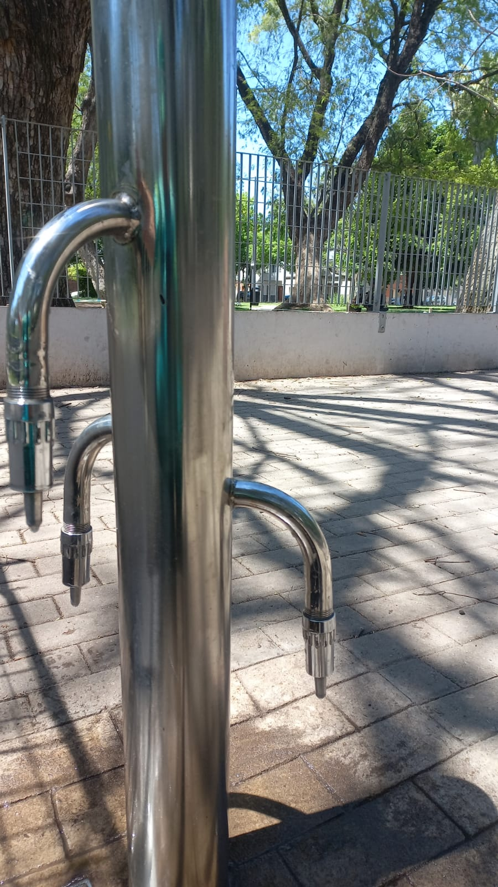
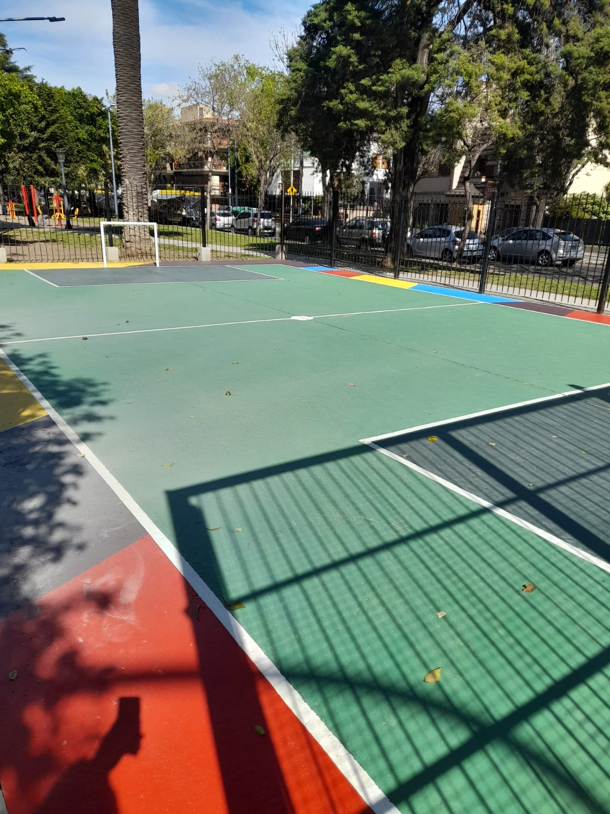
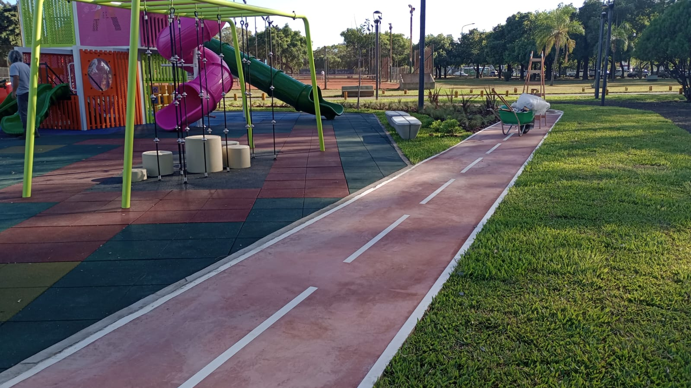
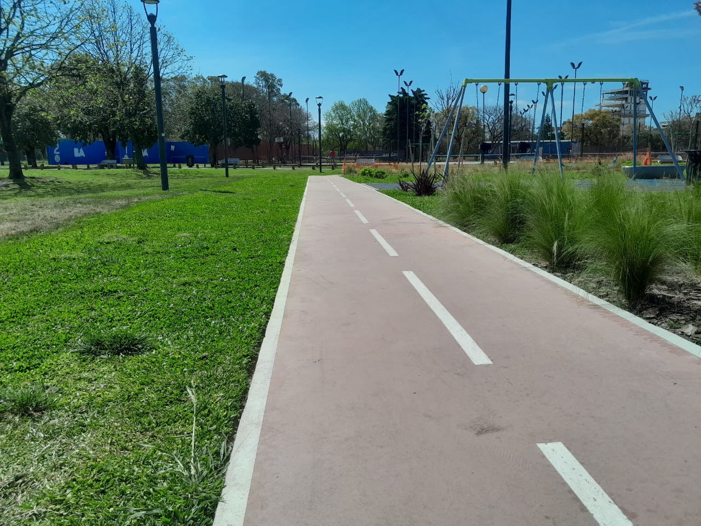
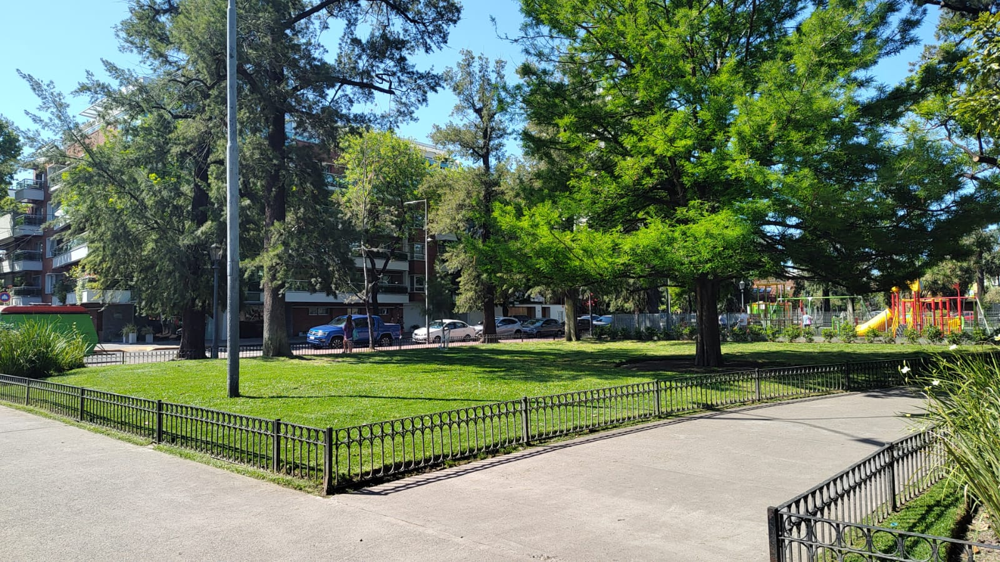

QUIENES SOMOS
Orientados a dar soluciones integrales para espacios verdes de mediana y gran escala en espacios públicos, empresas o particulares.
Los espacios verdes constituyen uno de los principales articuladores de la vida social. Son lugares de encuentro, de integración, promueven la diversidad cultural generan valor simbólico, identidad y pertenencia. Asimismo, contribuyen en la regulación hídrica y en la reducción del impacto de la ciudad o industria construida sobre el medio ambiente. Y ofrecen un ecosistema apropiado para la conservación de la biodiversidad.
POR QUE ELEGIRNOS
The Clean Garden S.R.L es una empresa de servicios para los espacios verdes; conformada por un equipo de trabajo cuyas acciones diarias se ejecutan con una elevada vocación de servicio a sus clientes y cumpliendo con la presente politica.
mantenemos los canales de comunicación necesarios para asesorar acerca de soluciones y respetando los plazos de trabajo.
aplicables a nuestras actividades, los requisitos de nuestros clientes, los requisitos del Sistema de Gestión Integrado, y otros a los que la organización suscriba, relacionada con los aspectos ambientales.
técnicas de cada uno de los integrantes del equipo a través de su formación y desarrollo profesional.
como estándar de trabajo, apuntando a reducir el consumo de agua, energía y así mismo reducir, reusar y reciclar los residuos con la activa participación de todos los miembros de la organización, realizando revisiones periódicas del Sistema de Gestión Integrado.
y minimizar los impactos ambientales desarrollando una evaluación previa de las actividades.
Trabajamos bajo certificación
NUESTROS CLIENTES